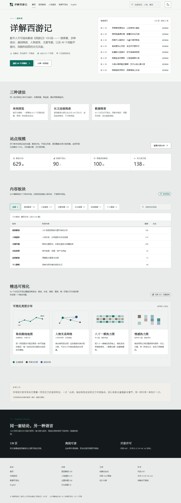
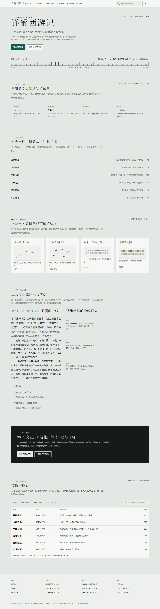
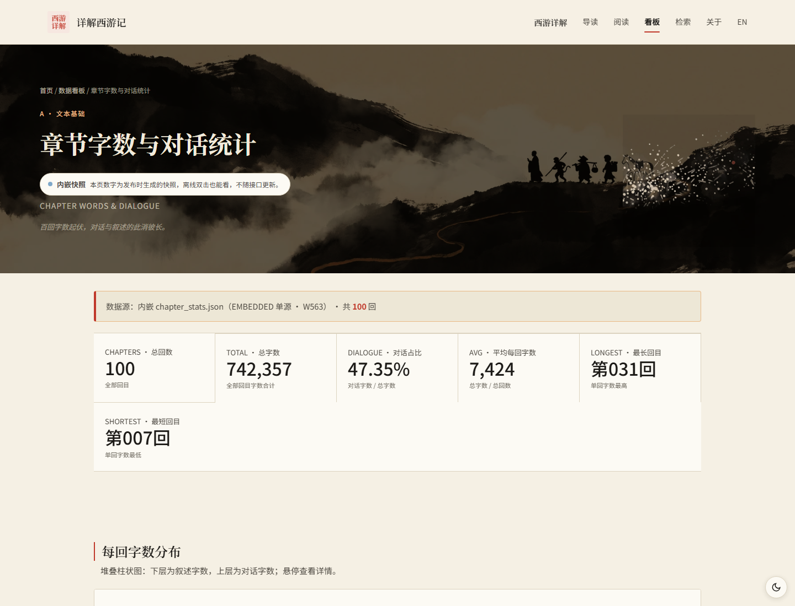
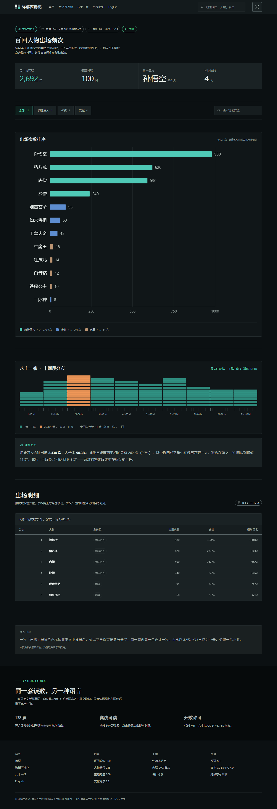
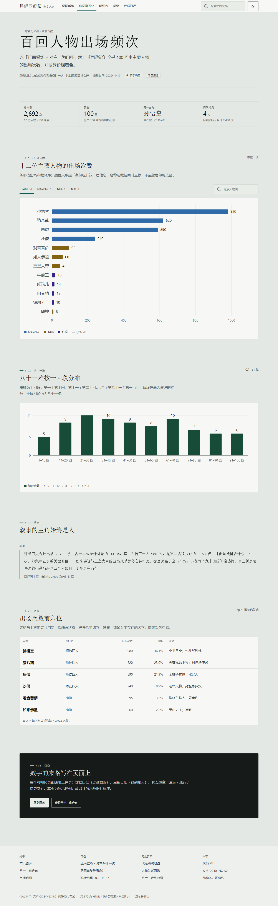

W1264 · 零参考重做 · 三方对照
现役「宣纸刻本」 vs 零参考甲「读数台」 vs 零参考乙「注释本」
三个方向的视觉语言彼此完全不同。甲与乙是本批从零产出（无上下文 subagent · 只继承客观工程契约），与 W1261 宣纸刻本、W1262 v3 均无继承关系。全部为本机 Playwright 实拍（file:// 双击形态）。
一、落地页
左=现役（宣纸暖底 + 毛笔插画）· 中=甲（冷灰素墙 + 青釉 + 卷首索引表）· 右=乙（纸白 + 墨青 + 百回刻度尺 + 发丝线分节）。
现役 · 宣纸刻本W1261已在库

暖宣纸底 + 宋体巨题 + 毛笔插画主视觉。问题：文化符号铺满每页，数据页失去仪器感。
甲 · 读数台零参考本批新增

刻度承担分组、读数承担结论。卷首索引是一张带刻度的表；「三种读法」三栏平铺无卡片。
乙 · 注释本零参考本批新增

为连读 30 分钟而生。发丝线分节，首屏底部是 100 格「百回刻度尺」（一格=原著一回）。
二、数据可视化页
现役 data 页同页并存两套语言（深色水墨 hero + 新 KPI 卡）；甲把数值直标条形末端；乙把 KPI 做成被线隔开的数字带。
现役 · dataW1261已在库

hero 仍是旧深色水墨素材带 + 白色标题，与下方新 KPI 卡并存 ⇒ 拼贴感的直接来源。
甲 · dataviz零参考本批新增

暗色入窑。数值直标条形末端；釉色三色池承担身份组；「十回尺」把难数密度压成一把尺。
乙 · dataviz零参考本批新增

同一语言换仪器形态。KPI 是数字带不是卡片；图形颜色只承担「身份组」一层信息。
三、三方向并列的机械对照
| 维度 | 现役 W1261 宣纸刻本 | 甲 读数台 | 乙 注释本 |
|---|---|---|---|
| 主强调色 | 朱砂 #C0392B | 青釉 #0E6E63 | 墨青 #0E5A55 |
| 底色 | 暖宣纸 #F5F0E4 | 冷灰素墙 #E8EBE9 | 纸白 #F4F5F2 附近 |
| 暗色策略 | 深墨褐（同一套色相变暗） | 深窑底（独立取值，釉色发色） | 深墨青底（独立取值） |
| 签名元素 | 朱砂印 + 45 枚线刻图标 | 十回尺（难数齿 + 读数窗） | 百回刻度尺（一格 = 原著一回） |
| 色彩策略 | 唯一彩色强调（朱砂） | 釉色三色池（同图可分，机器搜索得出） | 机器调校序列（Okabe-Ito 派生，三型 ΔE ≥15） |
| 长文处理 | reader 族保留衬线（既定决策） | 未出长文样板（自述弱项） | 双栏正文 40em + 旁注 15rem（方向核心） |
| 数据页主张 | — | 3 秒读懂一张图 | 秩序来自线与字号层级 |
| 独立复验 | — | 109 令牌 / 41 类名全覆盖 · 0 错误 | 109 令牌 / 41 类名全覆盖 · 0 错误 |
| 本批发现并修掉的缺陷 | — | （子代理自述 10 处目视修复·本会话复验通过） | reveal 区块全页截图下永不显现（本会话独立复现并根修） |
两方向的设计语言彼此独立，且与被禁的 W1261 / W1262 无继承关系：甲用「读数台」解决判读，乙用「注释本」解决连读；两者的强调色（青釉 / 墨青）、底色（冷灰 / 纸白）、签名元素（十回尺 / 百回刻度尺）、字体策略与色彩策略均不同。
共同短板：两者都只交付了落地页 + 数据页两族样板，长文阅读页（636 页·占站点 73%）在甲方向尚无设计；乙方向虽给出了双栏旁注版式，但未出可运行长文样板。落地前必须补齐 reader 族。
共同短板：两者都只交付了落地页 + 数据页两族样板，长文阅读页（636 页·占站点 73%）在甲方向尚无设计；乙方向虽给出了双栏旁注版式，但未出可运行长文样板。落地前必须补齐 reader 族。